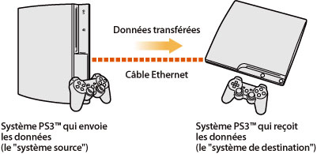
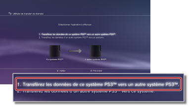
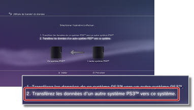

Paramètres > Paramètres système > Utilitaire de transfert de données
Utilitaire de transfert de données
Vous pouvez maintenant transférer (copier ou déplacer) des données qui sont enregistrées sur le disque dur d'un système PS3™ vers le disque dur d'un autre système PS3™ à l'aide d'un câble Ethernet.

Avis
- Lorsque vous exécutez cette opération, toutes les données stockées sur le système PS3™ qui reçoit les nouvelles données (le "système de destination") sont supprimées.
- Comme il n'est pas possible de restaurer les données supprimées, veillez à ne pas supprimer fortuitement des données importantes. L'utilisateur est responsable de toute perte ou altération de données.
- Il est possible que certains types de données ne puissent pas être transférés. Pour plus de détails, sélectionnez ici.
Préparation des systèmes en vue du transfert de données
Avant de démarrer le transfert de données, vous devez exécuter les étapes suivantes.
1. |
Mettez à jour le logiciel système des deux systèmes PS3™ pour qu'ils disposent de la version la plus récente. |
|---|---|
2. |
Préparez le système PS3™ qui enverra les données (le "système source"). |
- Créez un compte PlayStation®Network si un utilisateur n'en possède pas encore.
- - Sélectionnez
 (PlayStation®Network) >
(PlayStation®Network) >  (S'inscrire à PlayStation®Network), puis suivez les instructions à l'écran pour créer un compte.
(S'inscrire à PlayStation®Network), puis suivez les instructions à l'écran pour créer un compte. - Désactivez le système PS3™ si les données à transférer renferment un contenu acheté auprès de PlayStation®Store.
- - Sélectionnez (PlayStation®Network) > (Gestion du compte) >
 (Activation du système).
(Activation du système). - Sauvegardez ou "synchronisez" les informations des trophées du système PS3™ à l'aide du serveur PlayStation®Network si vous souhaitez transférer les informations relatives aux trophées.
- - Connectez-vous à PlayStation®Network, puis sélectionnez
 (Jeu) >
(Jeu) >  (Collection de trophées).
(Collection de trophées). - Connectez-vous à
 (PlayStation®Home) avant de transférer les données si vous avez obtenu des récompenses à utiliser dans (PlayStation®Home) sur le système source.
(PlayStation®Home) avant de transférer les données si vous avez obtenu des récompenses à utiliser dans (PlayStation®Home) sur le système source. - Sauvegardez dans votre jeu enregistré les informations de profil et les niveaux que vous avez créés dans LittleBigPlanet™. Vous pouvez ensuite utiliser ces données sauvegardées lorsque vous jouez à LittleBigPlanet™ sur le système PS3™ de destination.
Avis
Les limitations suivantes s'appliquent si vous transférez les données sans créer de compte PlayStation®Network :
- Il est possible que vous ne puissiez pas utiliser les données enregistrées sur le système PS3™ de destination.
- Il est possible que vous ne puissiez plus obtenir de trophées à l'aide des données enregistrées que vous avez transférées.
- Les informations de trophées ne sont pas transférées.
Transfert des données
Eteignez les deux systèmes PS3™, puis exécutez les étapes ci-dessous. Si les données transférées sont des données de jeux enregistrées dont la copie est interdite ou des données protégées par les droits d'auteur, elles sont déplacées vers le système PS3™ de destination et supprimées du système PS3™ source.
1. |
A l'aide d'un câble Ethernet, établissez une connexion directe entre les deux systèmes PS3™. |
|---|---|
2. |
Connectez les systèmes PS3™ à des connecteurs d'entrée vidéo différents du téléviseur. |
3. |
Mettez le téléviseur sous tension, puis allumez les systèmes PS3™. |
4. |
Sur le système PS3™ source, sélectionnez |
5. |
Sélectionnez [1. Transférez les données de ce système PS3™ vers un autre système PS3™.].  Si vous n'avez pas exécuté les étapes préparatoires décrites plus haut, les instructions suivantes s'affichent pour vous permettre de terminer la procédure. |
6. |
Si le système PS3™ est en veille alors que vous souhaitez démarrer le transfert de données, utilisez la télécommande du téléviseur pour basculer l'entrée vidéo afin d'afficher l'écran du système PS3™ de destination. |
7. |
Sur le système PS3™ de destination, sélectionnez |
8. |
Sélectionnez [2. Transférez les données d'un autre système PS3™ vers ce système.]  Suivez les instructions affichées pour achever l'opération. |
 (Paramètres) >
(Paramètres) >  (Paramètres système) > [Utilitaire de transfert de données].
(Paramètres système) > [Utilitaire de transfert de données].Conseils
- Une fois le transfert des données terminé, vous pouvez éteindre le système PS3™ source. Réglez le téléviseur de manière à afficher l'écran du système PS3™ source, puis sélectionnez
 (Utilisateurs) >
(Utilisateurs) >  (Eteindre le système).
(Eteindre le système). - Si l'opération qui vient d'être effectuée a entraîné le transfert d'un contenu téléchargé à partir de PlayStation®Store, vous devez activer le système PS3™ de destination avant de pouvoir utiliser ces données. Ouvrez une session sur le système PS3™ en tant qu'utilisateur propriétaire du contenu, puis sélectionnez (PlayStation®Network) > (Gestion du compte) > (Activation du système) pour activer le système.
Limitations de l'Utilitaire de transfert de données
L'Utilitaire de transfert de données ne permet pas de transférer certains types de données tandis que d'autres peuvent être transférés, mais ne peuvent pas être lus sur le système PS3™ de destination.
Pour obtenir les informations les plus récentes, visitez le site Web SCE de votre région. Il n'est pas possible de transférer les types de données suivants :
- Contenu vidéo téléchargé en location à partir de PlayStation®Store (type de fichier : MNV)
- Pistes (y compris les "ensembles de morceaux") pour logiciel SingStar™ qui ont été enregistrées sur le disque dur du système PS3™
- Fichiers vidéo protégés par des droits d'auteur (types de fichiers : MGV et ETS)
- Fichiers vidéo compatibles avec le service DivX® VOD (Video On Demand)
Les types de données suivants ne peuvent être utilisés qu'en exécutant des étapes supplémentaires, une fois le transfert des données terminé.
- Données d'application pour Life with PlayStation®
- - Téléchargez et installez l'application Life with PlayStation® sur le système PS3™ de destination. Vous pouvez continuer à accumuler des points de contribution pour le système de classement PlayStation®Network du canal Folding@home™.
- GripShift™
- - La première fois que vous jouez après avoir transféré les données, un message d'erreur s'affiche et vous vous trouvez dans l'impossibilité de jouer. Pour jouer, téléchargez et installez de nouveau le jeu.
- Données enregistrées de Ghostbusters™ et Ghostbusters™: The Video Game
- - Le jeu enregistré n'est pas reconnu la première fois que vous jouez après avoir transféré les données. Pour utiliser les données enregistrées, quittez le jeu, puis redémarrez-le.
Conseil
Il est possible que certains logiciels ne soient pas vendus dans toutes les régions.